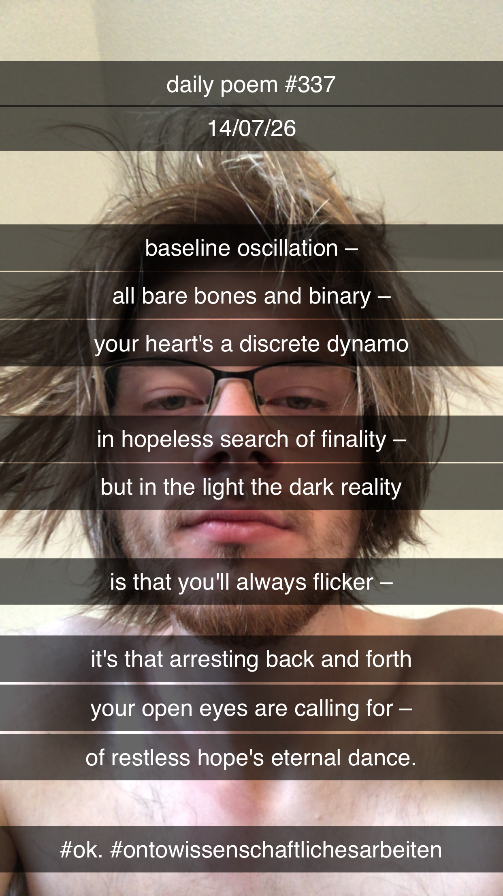

Of the Roots of Hope
[337]Baseline oscillation –
All bare-bones and binary –
Your heart's a discrete dynamo
In hopeless search of finality –
But in the light the dark reality
Is that you'll always flicker –
It's that arresting back-and-forth
Your open eyes are calling for –
The restless hope's eternal dance.
